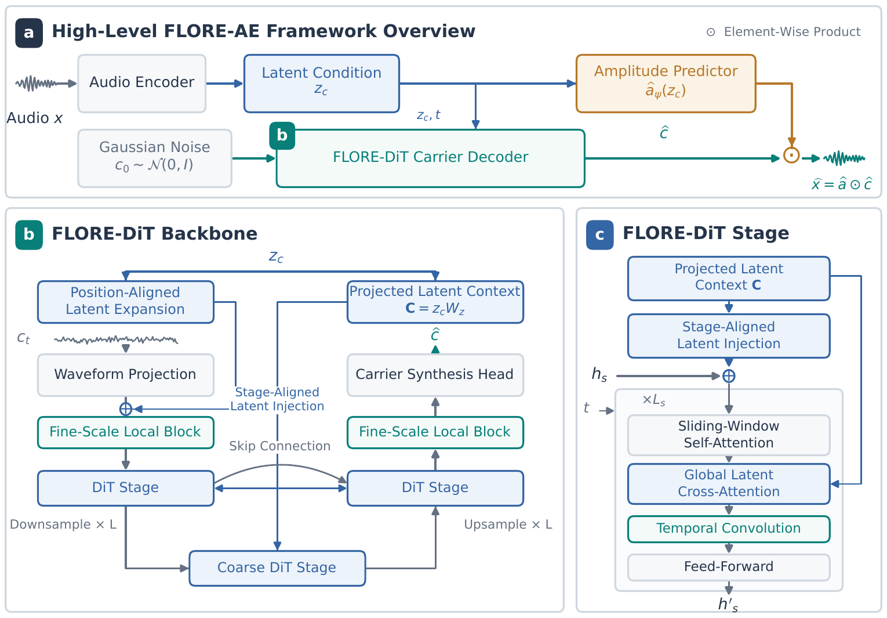

FLORE-AE: Rethinking Audio Autoencoding
with Waveform Diffusion Decoders
FLORE-AE formulates audio reconstruction at high compression as waveform diffusion conditioned on compact latents. Its latent interface supports reconstruction, text-to-audio generation, and editing.
Method overview

01 Audio Reconstruction
Speech, music, and sound reconstructions.
Playback volume is shared. Reconstruction levels are preserved; only one recording plays at a time.
02 Text-to-Audio Generation
Sound — AudioCaps
DiT latent generator · 24 sampling steps · CFG 5 · 10 s
Music — Song Describer
DiT latent generator · 24 sampling steps · CFG 5 · 10 s
03 Audio Editing
Text-guided masked inference on AudioCaps. Shading marks the edited interval.
Inpainting
Continuation
04 Results
Results reported in the paper.